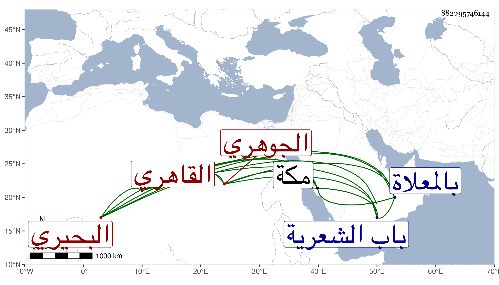

0902Sakhawi.DawLamic.ITO20230111-ara1.EIS1600.882095746144
Biography ID: 882095746144
692
محمد بن صدقة شمس الدين البحيري الأصل ثم القاهري الجوهري ويعرف بابن الشيخ لكون والده بل كانت أمه من ذرية الشيخ مصباح بل هو خال أمة الجبار أم الزين عبد الرحيم الابناسي ، كان مقيما بزاوية الشيخ شهاب خارج باب الشعرية ويقصد بالبر ونحوه ، نشأ صاحب الترجمة كأبيه فقيرا جدا فقرأ القرآ واليسير من المنهاج بل وبعض جامع المختصرات وتفقه قليلا وتزوج الوالد أخته قديما وتزوج هو ابنة الحاج بليبل باني منارة جامع الغمري ثم ابنة أخت والده المشار إليها ثم ابنة عبد الله الكاشف وذلك ابتداء ترعرعه فإنه كان أخذ في التكسب بسوق الجوهر وحينئذ أقبلت عليه الدنيا واتسعت دائرته جدا واقتنى الدور وغيرها ، وسافر لمكة غير مرة للتجارة ورزق حظا مع سكون وعقل وعدم تبسط في معيشته وسائر أحواله بحيث يصل إلى التقتير . مات بمكة في يوم الثلاثاء ثالث عشري جمادى الأولى سنة خمس وثمانين وصلي عليه بعد العصر عند باب الكعبة ودفن بالمعلاة وقد زاد على الستين ولم يوص بجهة بر ولذا اتفق في تركته ما حكيته في الوفيات عفا الله عنه .
